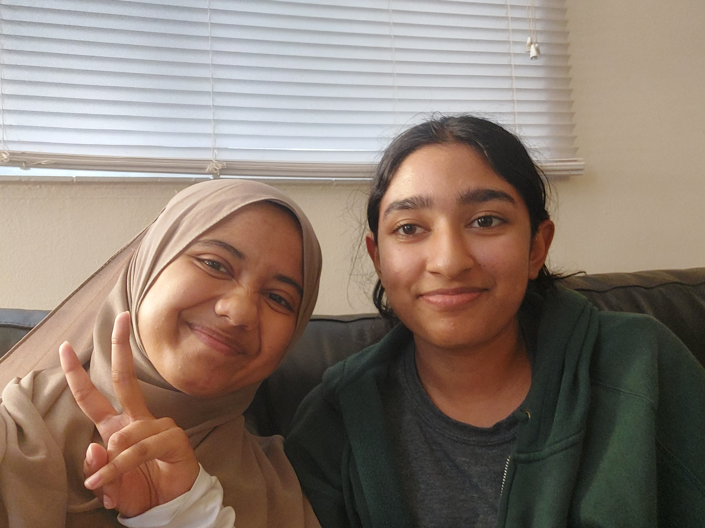

About Us
Nuhar and Unaizah!
We've been friends and classmates for many years and were excited to create a project for Ignition Hacks! This is Nuhar's first hackathon and Unaizah's second hackathon. We both have a strong interest in STEM, Unaizah enjoys coding, learning about artificial intelligence, and case study competitions. Whereas Nuhar likes technological design, chemistry, and project management. Our skills and passions are the perfect combination to create a world changing project!
Why We Made This
As women who regularly take the TTC we often feel unsafe, as we've faced numerous encounters with dangerous people. That's why we wanted to create a project that could help end this issue for other marginalized groups that have the same concerns. When we heard about this opportunity, we were excited to be able to work on a project together. We love STEM so this was the best thing for to do with our free time during summer vacation.
To learn more about self-protection while in public, visit the St. John Police Force Website.